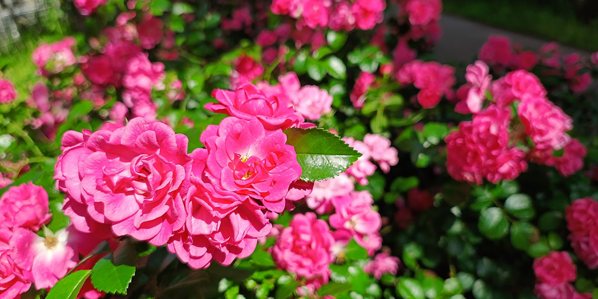

谷津バラ園は、京成谷津駅から歩いて訪れることができるバラ園です。花を楽しんだあとに谷津干潟へ足を延ばせば、庭園と水辺、それぞれの自然に出会えます。

春と秋、バラを楽しむ季節
世界各国の約800種類・7,500株のバラが植えられています。市の案内では、春は5月中旬〜6月中旬頃、秋は10月中旬〜11月中旬頃が見頃の目安です。天候によって開花の進み方は変わるため、お出かけ前に公式SNSで園内の様子をご確認ください。
花の色や形を見比べたり、立ち止まって香りを楽しんだり。写真を撮る時間も含めて、ゆっくり園内を巡る予定がおすすめです。
SNSフォトコンテスト2026
このコンテストの応募期間は終了しました。
テーマは「わたしの“好き”と、谷津バラ園」。園内で撮影した写真をInstagramに投稿して応募できます。応募期間は10月17日（土）〜11月30日（月）です。
入園料・開園時間・休園日
- 5〜6月
- 9:00〜18:00／18歳以上800円、65歳以上400円
- 7〜8月
- 9:00〜17:00／18歳以上400円、65歳以上200円
- 9月
- 9:00〜17:00／18歳以上100円、65歳以上50円
- 10〜11月
- 9:00〜17:00／18歳以上800円、65歳以上400円
- 12〜4月
- 9:00〜17:00／18歳以上200円、65歳以上100円
18歳未満・高校生は無料です。高校生は生徒手帳等、65歳以上の方は年齢を証明できるものをご用意ください。入園料は税込みで、支払いは現金のみです。
休園日は毎週月曜日（祝日の場合は翌日）と12月28日〜1月4日。ただし、5〜6月と10〜11月は無休です。割引・無料入園の条件や臨時の変更は、施設へご確認ください。
谷津駅からのアクセス
- 所在地
- 千葉県習志野市谷津3丁目1番14号
- 最寄り駅
- 京成線「谷津駅」から徒歩約7分
- お問い合わせ
- 谷津バラ園管理事務所 047-453-3772
谷津駅南口から、谷津遊路商店街を通ってバラ園へ向かう歩き方が楽しめます。来園には公共交通機関をご利用ください。
商店街・バラ園・谷津干潟を歩く
谷津駅から訪れるなら、商店街、バラ園、谷津干潟の順に巡るプランはいかがでしょうか。以下は当サイトの散策提案です。道順は地図と現地の案内表示で確認しながらお進みください。
- 谷津駅南口から商店街へ。行き帰りの食事や休憩の場所を探しながら歩きます。
- 谷津バラ園で花を観賞。季節の花を眺め、写真撮影や香りを楽しみましょう。
- 谷津干潟の遊歩道へ。北側から水辺の景色を楽しみ、時間や体力に合わせて歩く範囲を決めます。
谷津干潟の遊歩道を一周する場合は約3.5km、歩くだけなら約60分、観察しながらなら約90分が目安です。バラ園の観賞や駅からの移動時間は別に見込んでください。自然観察センターは干潟の南側にあり、バラ園からさらに歩く必要があります。
歩きやすい靴と飲み物を用意し、天気や暑さに合わせて無理のない予定を立てましょう。自然観察センターの館内も利用する場合は、バラ園とは別に開館時間・休館日・入館料をご確認ください。
開花状況・公式の利用案内
開花状況や催しの最新情報は、谷津バラ園の公式Instagramと公式Xをご確認ください。
料金・開園時間などの利用情報は、習志野市の谷津バラ園紹介ページでも確認できます。
施設情報は習志野市の公開情報、来園時の交通案内は千葉県公式観光サイト「ちば観光ナビ」をもとに当サイトで整理しました。当ページは谷津干潟ナビによる周辺散策案内です。情報確認日：